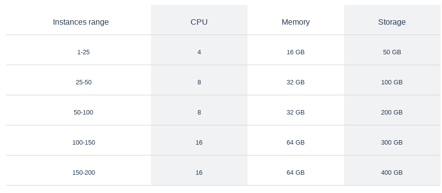

Frequently asked questions¶
Note
1. What should I configure on firewalls if I use the SAAS architecture?¶
server: app.datasentinel.io
port: 443
2. What should I configure on firewalls if I use the On-premises architecture?¶
server: <<Your platform server>>
port: 443
3. How can i change the default self-signed certificate?¶
Note
Generate a certificate for the platform machine
Replace existing files with the real certificate (cert_datasentinel.pem and key_datasentinel.pem)
Restart NGINX
4. How do i change the access token?¶
Note
The support team sends you a valid token
Update Datasentinel platform with the valid token
See documentation about Token
5. What is the data retention policy?¶
By default, data is kept 14 days
Note
You can change this retention period to increase or decrease it, according to your needs.
To do so, go to Global settings submenu and enter the desired period.
6. What is the platform sizing recommendation?¶
Sizing the Platform
1. CPU and MEMORY
The needed values depend on the number of users. The most consuming resources are SELECT queries executed on the platform
2. STORAGE
The needed storage will depend on several factors
The number of PostgreSQL instances to monitor
The data retention period (default 14 days)
The number of tags associated to each instance.
The number of distinct queries (pg_stat_statements)
An average value has been observed of 150 MB per day per instance
For example
You have 50 PostgreSQL instances
The default data retention is used : 14 days
You have 5 custom tags per instance
With this configuration, the needed space to store data is 50 * 150 * 14 = 100 GB
Note
The values displayed below are default values for standard workloads and default data retention
{kind=link}